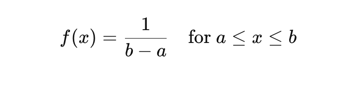
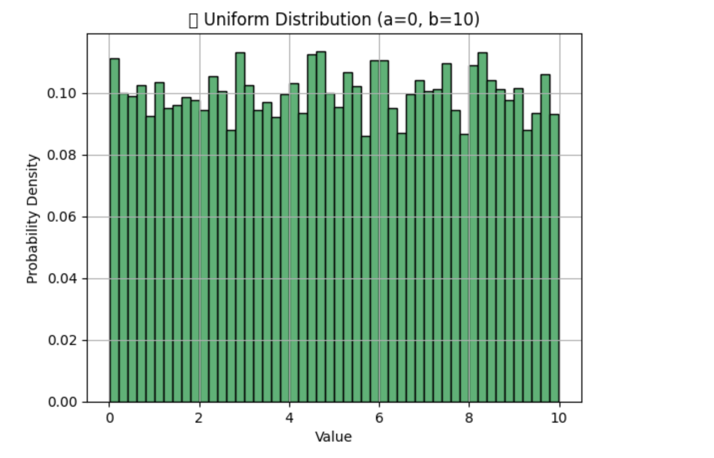

📐 What is a Uniform Distribution?#
A Uniform Distribution is a probability distribution where all outcomes are equally likely within a certain interval.
Used to describe probability where every event has equal chances of occuring.
✅ Types:#
-
Discrete Uniform Distribution
- Limited number of distinct, equally likely outcomes.
- 🎲 Example: Rolling a fair die → 1, 2, 3, 4, 5, 6.
-
Continuous Uniform Distribution
- Infinite possible values within a continuous range.
- 📏 Example: Random float from 0 to 1.
📊 Formula (Continuous):#

Where: - a = lower bound - b = upper bound - Every value between a and b is equally likely
# ✅ Real-World Use Cases in AI/ML 1. Weight Initialization in Neural Networks - ⚙️ Frameworks like TensorFlow & PyTorch often use uniform distribution to initialize weights. - 🎯 Goal: Avoid starting too high or too low → speeds up convergence.
Example:
np.random.uniform(low=-0.05, high=0.05, size=(3, 3))
-
Random Sampling / Bootstrapping
-
📊 Uniform distribution is used to randomly select samples for:
- Cross-validation
- Bagging algorithms (like Random Forests)
- Data augmentation
-
Hyperparameter Search
- 🎯 Used in random search for tuning hyperparameters.
- For example, selecting learning rates uniformly between 0.001 and 0.1.
Example
import numpy as np
import matplotlib.pyplot as plt
a, b = 0, 10
data = np.random.uniform(a, b, 10000)
plt.hist(data, bins=50, color='mediumseagreen', edgecolor='black', density=True)
plt.title(f"📊 Uniform Distribution (a={a}, b={b})")
plt.xlabel("Value")
plt.ylabel("Probability Density")
plt.grid(True)
plt.show()
